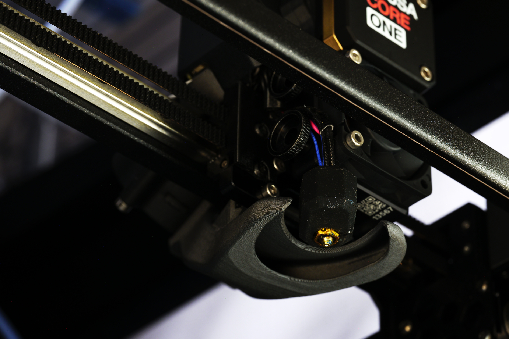
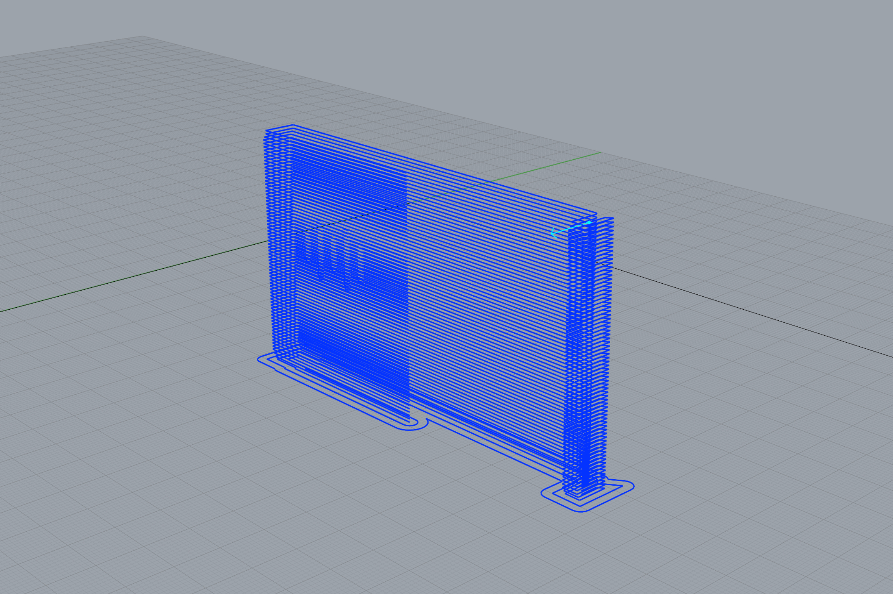
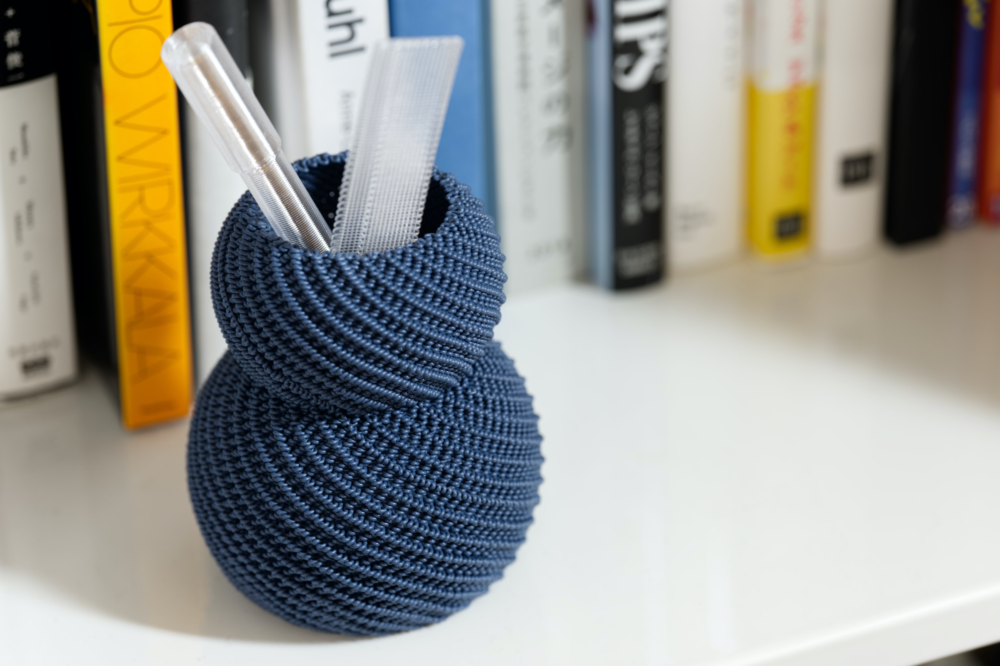
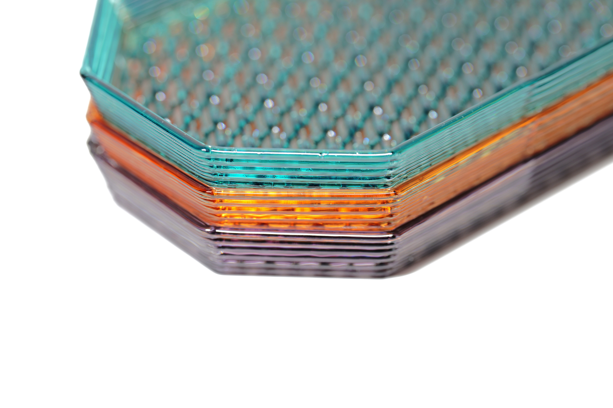
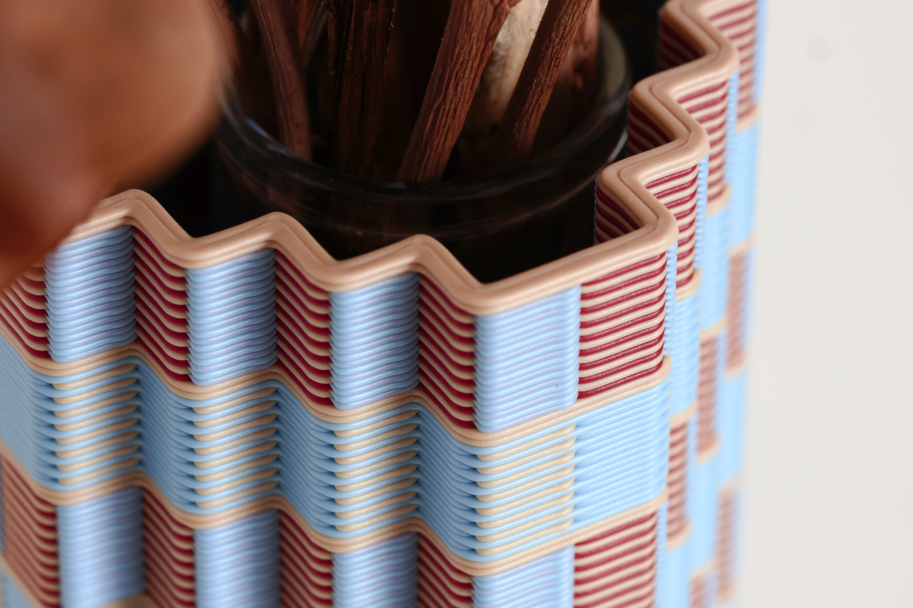

3D Printing
USAGI Craft Lab. の作品は主に、熱で溶かしたフィラメントを一層ずつ積み重ねて立体をつくる、FDM方式の3Dプリンターを使って制作しています。
3Dプリントを単に形をつくるための製造方法としてだけでなく、「積層する」という工程そのものを、形や質感、色を生み出すための表現として活用しています。USAGI Craft Lab. works are made primarily with FDM 3D printers, which build three-dimensional forms by depositing melted filament one layer at a time.
We use 3D printing not only as a way to manufacture a shape, but also treat the layering process itself as a means of creating form, texture and color.

Original G-code
3Dプリンターを動かすためのG-codeを独自に生成しています。
主にRhinocerosとGrasshopperを使って形状や造形経路を設計し、そのパスをG-codeへ変換するためのツールも独自に制作しています。
ノズルの移動経路や出力スピードなどを調整することで、仕上がりの精度を高めるだけでなく、一般的な造形方法では難しい出力にも取り組んでいます。
こうした制御そのものを設計の一部として捉え、3Dプリントだからこそ生まれる形や質感、新しい表現の可能性を探っています。We generate our own G-code to control the movement of the 3D printer.
Using Rhinoceros and Grasshopper, we design forms and toolpaths, and we also develop our own tools to convert those paths into G-code.
By adjusting nozzle movement paths and print speeds, we not only improve print quality but also explore forms of fabrication that are difficult to achieve with conventional workflows.
We treat this level of control as part of the design process itself, exploring forms, textures and new possibilities of expression that emerge specifically from 3D printing.

Large Nozzle
一般的な3Dプリントよりも太いノズルを使った造形を取り入れています。
一層ごとの線が太くなることで積層がはっきりと現れ、独特の手触りや表情が生まれます。積層痕を隠すのではなく、プロダクトの質感や造形をつくる要素として活かしています。We incorporate printing with larger nozzles than those commonly used in 3D printing.
Thicker extruded lines make each layer more visible, creating a distinctive tactile and visual character. Rather than hiding the layer lines, we use them as an element that shapes the texture and form of the product.

Transparent Material
透明な素材も、作品づくりに取り入れています。
表面のテクスチャによって、光の通り方や中にあるものの見え方が変化します。完全な透明を目指すのではなく、3Dプリントと透明素材を組み合わせることで生まれる、独特の光や質感を活かしています。Transparent materials are also part of our work.
Surface texture changes the way light passes through the object and how its contents are seen. Rather than aiming for perfect transparency, we use the distinctive light and texture created by combining transparent material with 3D printing.

Color
造形の途中でフィラメントを切り替えることで、一つの立体の中に複数の色を取り入れています。
パーツごとに色を分けるだけでなく、レイヤーごとに色を切り替えたり、積層位置のずれと組み合わせたりすることで、3Dプリントの製造工程を活かした色の表現をつくっています。By switching materials during printing, we introduce multiple colors within a single object.
Rather than simply assigning different colors to separate parts, we change colors layer by layer and combine them with shifts in layer position, using the 3D-printing process itself to create color effects.